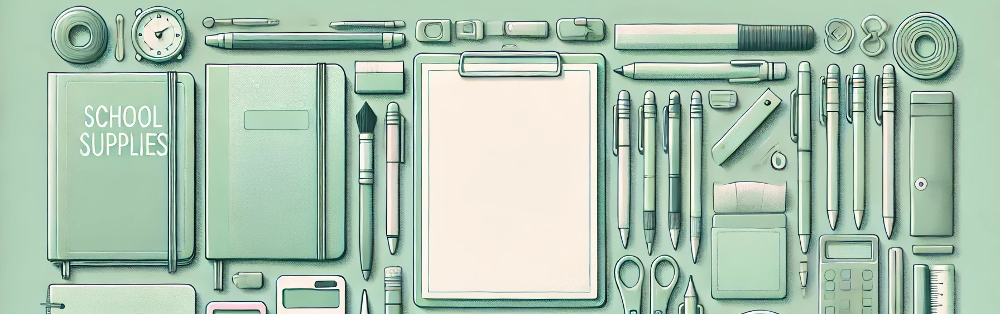

What Should a 7th Grader Know by the End of the Year?

Grade 7
Seventh grade is a year of deepening complexity - academically, emotionally, and socially. Students are no longer adjusting to middle school - they’re in the thick of it. They’re asked to analyze information critically, take on greater responsibility, and explore who they are in the world. By the end of Grade 7, students should be able to handle more abstract concepts, work independently, and communicate ideas with clarity and evidence.
Let’s explore what a well-rounded 7th grader should know and be able to do by the end of the school year.
Reading Skills
Seventh-grade students are expected to:
⁕ Read and comprehend complex fiction, nonfiction, and informational texts.
⁕ Analyze how an author develops theme, tone, and point of view.
⁕ Identify literary devices such as symbolism, irony, personification, and allusion.
⁕ Evaluate the effectiveness of arguments and evidence in argumentative texts.
⁕ Compare and contrast texts from different cultures or time periods.
⁕ Use textual evidence to support inferences and critical analysis.
⁕ Interpret figurative and connotative meanings of words and phrases.
Writing Skills
Writing becomes more advanced and academic. Students should be able to:
⁕ Write clear, organized essays in multiple formats: narrative, argumentative, expository, and analytical.
⁕ Use a strong thesis and support it with logical reasoning and evidence.
⁕ Revise for clarity, tone, word choice, and structure.
⁕ Properly use transitions to link ideas and paragraphs.
⁕ Conduct research and cite sources using proper formatting (APA or MLA basics).
⁕ Use grammar conventions correctly (verb tense, subject-verb agreement, punctuation).
⁕ Vary sentence structure and apply precise vocabulary.
Mathematics
Seventh-grade math often introduces pre-algebra concepts and more abstract reasoning. Students should be able to:
⁕ Add, subtract, multiply, and divide integers and rational numbers.
⁕ Understand and apply proportional relationships and ratios.
⁕ Solve linear equations and inequalities.
⁕ Graph equations and interpret slope and intercepts.
⁕ Convert between fractions, decimals, and percentages.
⁕ Apply formulas to calculate area, surface area, and volume.
⁕ Work with probability, statistics, and sampling.
⁕ Understand simple interest and real-world percent problems.
Science
Seventh-grade science deepens students' understanding of the natural world. Topics may vary, but typically include:
⁕ Cells, heredity, and basic genetics (dominant and recessive traits).
⁕ Human body systems and their functions.
⁕ Ecosystems, biodiversity, and environmental science.
⁕ Energy transformations and conservation of energy.
⁕ Physical and chemical changes in matter.
⁕ Scientific method, experimental design, and data analysis.
⁕ Use of lab tools, safety procedures, and accurate measurements.
Social Studies
In Grade 7, the focus may be world history, civics, or geography, depending on the school. By year’s end, students should:
⁕ Understand ancient and classical civilizations and their impact on the modern world.
⁕ Identify key historical figures and events and their global significance.
⁕ Analyze primary and secondary sources.
⁕ Understand the structure of governments, including democratic and authoritarian systems.
⁕ Recognize the causes and effects of revolutions, conflicts, and trade routes.
⁕ Develop map-reading skills and interpret geographic information.
⁕ Understand cultural, religious, and economic influences on history.
Speaking and Listening
By the end of Grade 7, students should be able to:
⁕ Present arguments and ideas clearly with evidence in oral discussions.
⁕ Listen actively, take notes, and ask meaningful questions.
⁕ Participate in structured debates and collaborative group work.
⁕ Use formal and informal speech appropriately.
⁕ Integrate visual or multimedia components into presentations.
Social and Emotional Development
Seventh graders are navigating complex emotions and peer relationships. Developmentally, they should:
⁕ Take greater responsibility for homework, deadlines, and planning.
⁕ Develop emotional awareness and self-regulation skills.
⁕ Work effectively in groups and resolve conflicts constructively.
⁕ Begin to form identity, values, and a sense of independence.
⁕ Cope with peer pressure and social changes.
⁕ Seek help appropriately when facing academic or emotional challenges.
Technology and Digital Literacy
By the end of Grade 7, students should be proficient in:
⁕ Typing and formatting essays, slideshows, and research projects.
⁕ Evaluating digital sources for reliability, bias, and accuracy.
⁕ Using spreadsheets, databases, or coding tools (depending on the curriculum).
⁕ Practicing digital citizenship: respecting privacy, avoiding plagiarism, and communicating respectfully online.
⁕ Participating in virtual collaboration using tools like Google Docs, discussion boards, or learning platforms.
Arts and Physical Education
Students continue to develop creatively and physically:
⁕ Experiment with various art forms: sketching, painting, sculpture, digital design.
⁕ Analyze art and music from historical and cultural perspectives.
⁕ Participate in fitness activities and team sports that promote health and discipline.
⁕ Learn about nutrition, physical health, and personal well-being.
How Parents Can Help
⁕ Encourage open discussions about social and emotional issues.
⁕ Review schoolwork and deadlines without micromanaging.
⁕ Provide structure at home for study, sleep, and screen time.
⁕ Encourage extracurriculars to build confidence and social skills.
⁕ Talk about media, decision-making, and real-world responsibility.
⁕ Help with organization and planning for long-term projects.
Final Thoughts
Grade 7 is a time of great potential and personal growth. Students are discovering their voice, their learning style, and their role in the wider world. It’s a year full of questions, risks, and opportunities for learning—academically and emotionally. With the right support system, students will finish the year not only smarter but more confident and self-aware.